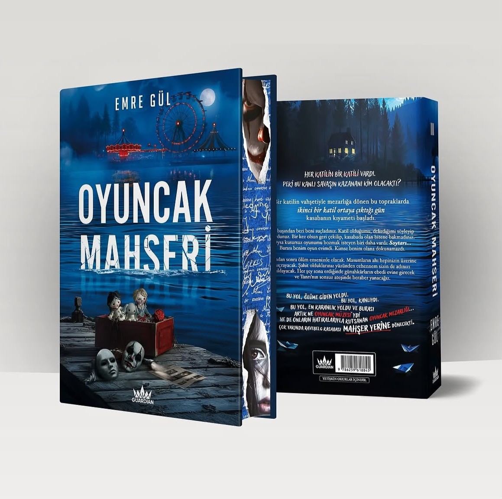

HER KATİLİN BİR KATİLİ VARDI. PEKİ BU KANLI SAVAŞIN KAZANANI KİM OLACAKTI?
Bir katilin vahşetiyle mezarlığa dönen bu topraklarda ikinci bir katil ortaya çıktığı gün kasabanın kıyameti başladı. En başından beri beni suçladınız. Katil olduğumu, delirdiğimi söyleyip durdunuz. Bir kez olsun geri çekilip, kasabada olan bitene bakmadınız. Oysa kusursuz oyunumu bozmak isteyen biri daha vardı: Soytarı...
Burası benim oyun evimdi. Kimse benim olana dokunamazdı. Bundan sonra ölüm ensenizde olacak.
Masumların ahı hepinizin üzerine sıçrayacak. Şahit olduklarınız yüzünden cehennem sizin de adınızı fısıldayacak. Her şey sona erdiğinde günahkârların ebedi evine girecek ve Tanrı’nın sonsuz ateşinde beraber yanacağız.
BU YOL, ÖLÜME GİDEN YOLDU. BU YOL, KANLIYDI. BU YOL, EN KARANLIK YOLDU VE BURASI ARTIK NE OYUNCAK MÜZESİ’YDİ NE DE ONLARIN HATIRALARIYLA KUTSANAN OYUNCAK MEZARLIĞI… ÇOK YAKINDA RAVEBELG KASABASI MAHŞER YERİNE DÖNECEKTİ.
Not: Yetişkin okurlar içindir.